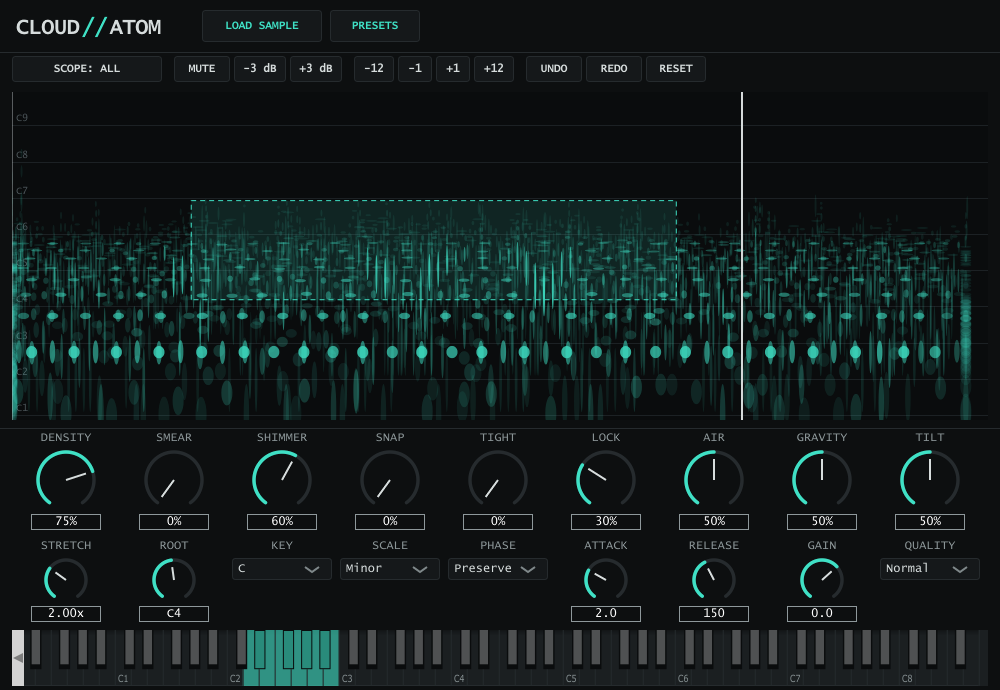

CLOUD//ATOM prototype + plugin v0.1
Matching pursuit analysis, corrected atom renderer, phase modes, noise layer. Python/numpy, offline. Every render below comes from the prototype's test run.
Build log
- Milestone 2: Sculpt
Drag on the plane to select a region; SCOPE switches the macros between the whole cloud and the selection only (Shimmer just the highs, Density just the tail). Mute, gain and transpose a region; double-click to add an onset, right-click to remove one (they drive Lock and Tight). Every edit is a non-destructive op stack with undo, redo and reset to analysis, saved in the project, and an amber ghost of the previous cloud shows what each edit changed. Presets save the whole sound, cloud included, so they play without the original sample. Edited atoms remember the frequency they were analysed at, so transposed regions stay phase-coherent. 34 plugin checks pass.
- Plugin v0.1: a playable instrument
VST3, AU and Standalone. Load or drop a sample; it analyses in the background and is playable after about 0.6 s while it keeps refining. 8 voices, root note C4 = original pitch, the 9 macros, Stretch with Lock, Snap to key and scale. The project stores the cloud itself, so a session reopens without the sample. Mac universal build and auval run in CI; 23 headless plugin checks pass.
- Phase propagation: pitch, Snap and stretch stay whole
Building the plugin showed that a sustained sound shifted in pitch came out 20 dB too quiet: a partial is a chain of overlapping atoms whose analysed phases only line up at the original pitch and spacing. The engine now carries every phase to the new frequency and spacing (design doc 5.4), integrating pitch over time so bends and vibrato stay coherent too, and resets at onsets so hits stay intact. An octave up now plays at full level (5,033 vs 281 before, original 5,273). Before/after below.
- C++ engine (milestone 1b)
JUCE-free engine matching the Python prototype to between -64 and -103 dB on 17 cases. 8 voices x 419 active atoms take about 11% of one core (AVX2). The port found the transient-lock pre-roll: hits now stay rigid from 5 ms before each onset.
- Design doc v0.2
Findings folded back into the design: corrected render loop, transient lock, anchored Linear phase as the Tight punch control, noise layer, a cut-down v1 scope.
- Python prototype (milestone 1)
Matching pursuit, the corrected renderer, phase modes, noise layer: the renders further down.
The plugin
